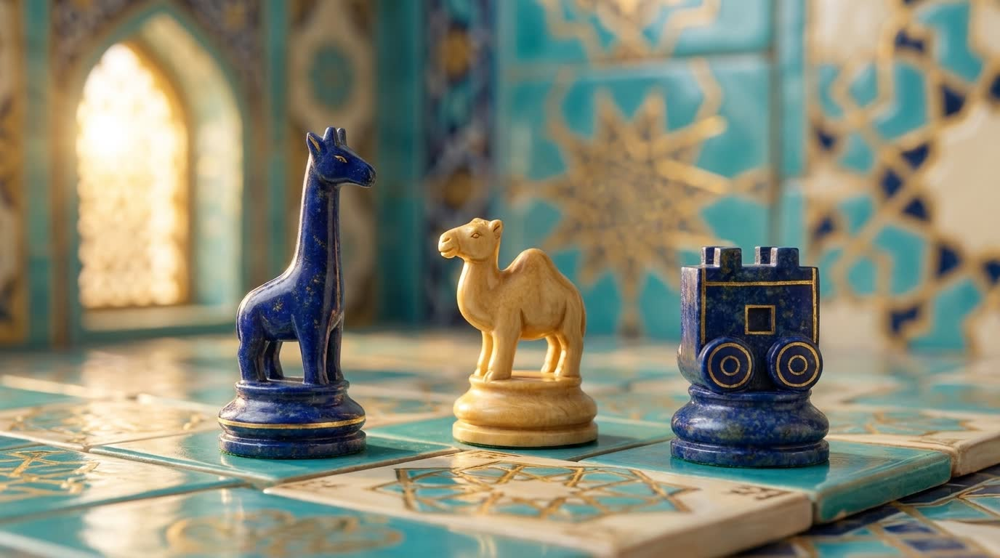

阿夫拉西阿卜：最古老的象棋之一
古撒马尔罕出土的七枚骨制棋子——证明早在帖木儿之前很久这里就有人下象棋。

阿夫拉西阿卜是古撒马尔罕的城址，蒙古入侵后被废弃。1977年，考古学家尤里·布里亚科夫在那里发现了七枚小小的象牙棋子。
这套棋子被认为是已知最古老的之一：年代断定从七世纪中叶到八世纪中叶不等，而同出的一枚钱币纪年为761年。棋子中可辨认出王、维齐尔、战车、象、骑手和步兵——已是一支可辨认的象棋军队。
这些棋子藏于撒马尔罕。这一发现表明，在帖木儿的大象棋之前七百年，这座城市就已经有人下象棋。